Work with Article Groups¶
Alation Cloud Service Applies to Alation Cloud Service instances of Alation
Customer Managed Applies to customer-managed instances of Alation
To view all article groups in your Alation catalog:
Sign in to Alation, and in the Apps drawer, click Article Groups. The Article Groups page will open which lists all existing article groups and their properties, such as:
Title Title of the article group
Description Description
Template Template(s) the article group is associated with
Articles Number of articles currently in this article group
You can filter the list of article groups based on the content in the Title and Description columns. To filter, start typing in the Filter field above the table that lists the article groups. The contents of the table will be filtered based on the text you type. Note that this filter works only with the content of the Title and Description columns and does not take into account the Template and Articles columns.
You can sort the Article Groups table by the Title. Click Title to apply sorting.
To view a specific article group, click its title. The corresponding catalog page of this article group will open.
Hide Articles and Article Groups¶
From Alation 2023.3.1, a Server Admin can hide all UI entrypoints for articles and article groups, including the Articles section in the left-hand navigation, the Article Groups app in the Apps drawer, and the Articles and Article Groups items from the Documentation Types and More Types dropdown in Search. This also disables the POST, Update, and Resurrect endpoints of the Article public API.
To hide Articles and Article Groups, go to Admin Settings > Feature Configuration and activate the toggle labeled Hide all entrypoints in the UI for Articles and Article Groups. See Feature Configuration for information on enabling features on that page.
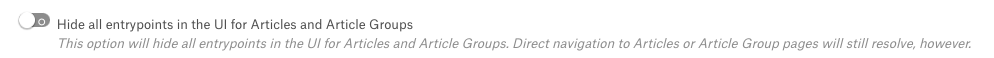Work with the Articles Table¶
You can filter the articles table, sort it by multiple columns, and add, remove and rearrange the columns.
Filter¶
To filter the table, start typing in the Filter table field. The content will update to only display the articles for which any custom field value matches the text you entered.
Note
The field does not have to be added as a column to the Articles table: search looks at the fields that are currently associated with the templates added to this article group.
Sort¶
By default, the articles in an article group are sorted alphanumerically by title. You can sort by a different column or by multiple columns.
Important
Sorting only works for the fields that are of picker, multi-picker, and date types. Sorting cannot be applied to fields of other types.
The Sort Content dropdown above the table lists all the columns that support sorting:
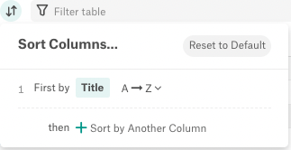Also note that the columns which support sorting are clickable when you hover over them, while the columns which do not support sorting are not.
Sort by a Single Column¶
To sort by a single column, click this column in the table: the names of the columns for the picker, multi-picker, and date types will be clickable.
You can also choose a field in the Sort Content dropdown:
Sort by Multiple Columns¶
To sort by multiple columns, select the fields to sort by in the Sort Content dropdown:
Click the sort icon:
To open the Sort menu, click Sort by a Column and click the name of the field to sort by. The sorting by this column will be applied. Remember that by default the table is sorted by Title, so in most cases you will see Title as the first sorting column and you will be asked to sort by another column. To choose another column as the first sort, either delete Title by clicking the X next to its name or simply click on the desired first column before opening the Sort menu.
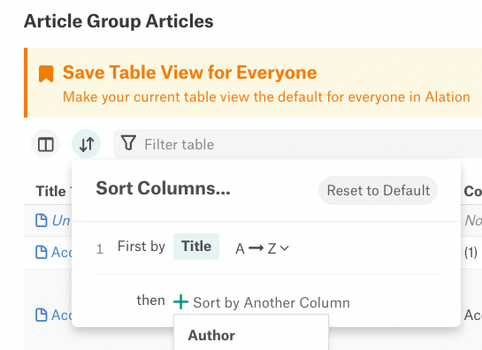
2. Click the sort icon again then click Sort by Another Column and click the name of another field to add to sorting. The sorting by this column will apply in the sorting by the first field. If there are articles with identical values for the first sorted column, they will be sorted in this group by the second column.
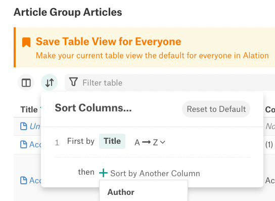The order in which the sorting is applied will be indicated next to the column name.
Sorting Order:
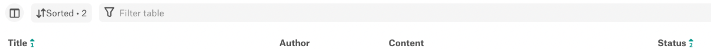
To change the order of the columns for sorting, click the sort icon:
Hover over the field name to reveal the move icon to the right:
Click it and drag and drop the field to a new place in the list.
To remove sorting for a column, click the X icon next to the field name.
Add, Remove, and Rearrange Columns¶
You need the role of the Catalog or Server Admin to add, remove, or rearrange columns of the article table.
To add, remove or rearrange the columns, click the 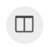 icon to open the Column Organization menu:
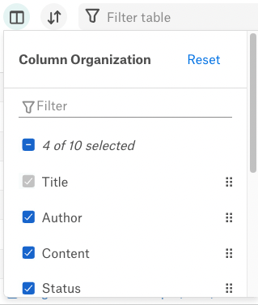To add a column, select the corresponding checkbox in the list. This list is formed from all the custom and built-in fields found on all the templates associated with this article group. A maximum of 20 columns can be added to the table.
Important
If a user does not have permission to view the values of a specific field on a specific article, they will appear as Not Set to this user.
To remove a column, clear the corresponding checkbox. The Title column cannot be removed.
To change the order of the columns in the table, hover over the field name to reveal the move icon:
Click it and drag and drop the field onto a new place in the list.
To reset the order back to the order in the column list, click Reset.
Click the Column Organization icon to close the menu:
Saving Your Table View for Everyone¶
You can save your articles table view of an article group for everyone in Alation. To make your view default, click Save View in the Save View for Everyone banner above the terms table.
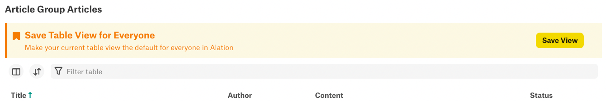Add New Articles to an Article Group¶
You can add a new article to an article gropu directly from the article group page. A user with any role other than Viewer can do it if they have permission to edit the article they are adding. To add an article:
On the article group page, click Add Article in the upper right corner and in the menu that opens, either
Click Create New Article to add a new article
Click Search Existing Articles to search among the articles that already exist.
Create a New Article from Article Group Page¶
To create an article, in the Add Article dialog, click Create New Article. If the current article group is based on a single template, a new article page will open, and the article will be based on this template by default. However, if the current article group is based on multiple templates, the Select Templates to Apply to Article dialog will open.
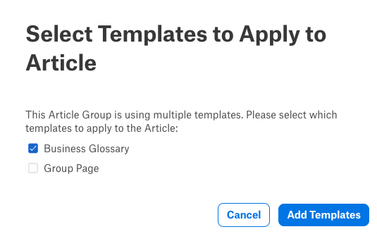In the Select Templates to Apply to Article dialog, select the templates you want to base your new article on. The templates list includes only the templates from the current article group. To create a new article from a template that has not been tied to this article group, see Working with Articles.
In the dialog, click Add Templates. A new article page will open, with the selected template(s) added. The article group from which you are creating this article will appear in the Article Groups field of the article page in the Properties panel on the right.
Provide the title and the body for the new article and save. Now you have added a new article to your article group.
To return to the article group, you can click its title in the Article Groups field under Properties on the right.
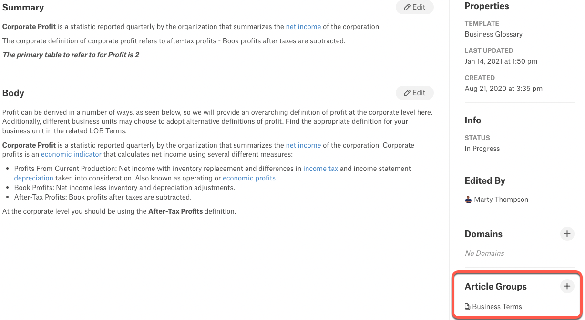Add an Existing Article¶
To add an existing article, in the Add Article dialog, click Search Existing Articles then use the search field to find the article you want to add.
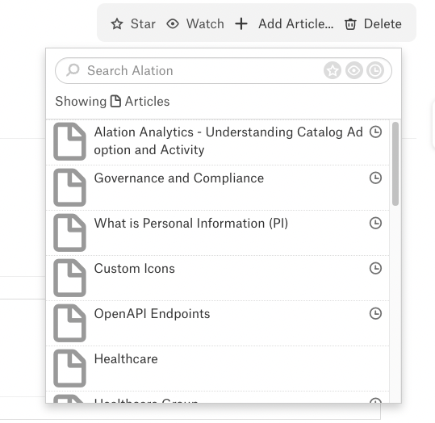
If the article you are adding and the article group are based on different templates, the template of the article group will be added to the article.
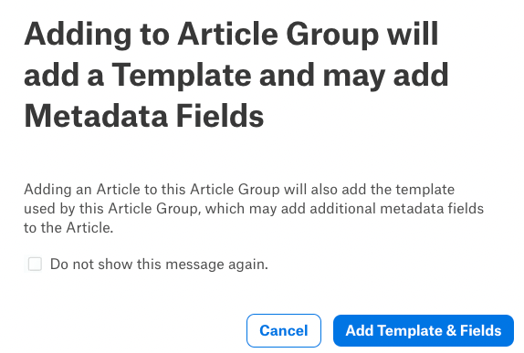
If this article group is using multiple templates, you will be able to select which one you want to be added to the article.
Note
Adding a template to an article enrolled into Agile Approval and which is in the Approved state has no impact on the state of this article: it remains Approved.
Modify an Article Group¶
To modify an article group:
Open the article group you want to change. The editable fields on the article group page will have the Edit button to the right of the field name. Click Edit to go into the editing mode for the field.
You can change the article group by:
Changing the title.
Changing the description.
Adding or removing templates.
Add, Remove, and Rearrange Columns in the table with articles.
For example, to edit the description, click Edit on the right of the Description field title. To add or remove templates, click Edit for Article Group Rules.
Remember to save the changes.
Removing a Template from an Article Group¶
If you remove a template from an article group, the articles associated with this template, only, are dismissed from this article group and will not appear in the articles table.
Deleting an Article Group¶
To delete an article group, click Delete in the upper-right corner of the article group page.
In the confirmation dialog that opens, confirm you want to delete the article group.
Deleting an article group does not delete articles bound to it.
Adding/Removing Articles to/from Article Groups Directly on the Article Page¶
Changing Article Templates¶
If you choose to change the template for an article that is bound to an article group using this template, note that de-associating the template and the article will also remove the article from the article group.
Adding an Article to an Article Group¶
You can add an article to an article group right on the catalog page of this article:
On the page of the article you want to add, find the Article Groups field on the right and click the 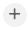 icon. The list of article groups will open.
Select the checkboxes of the article groups you want to add the article to. It may also add the article group templates to this article.
Note
Adding a template to an article enrolled into Agile Approval and is in the Approved state has no impact on the state of this article.
Alternatively, you can add your article to an article group by directly adding the template(s) that are associated with a specific article group to this article.
To add your article to an article group:
Find the Template field under Properties on the right of the article page. Hover over this title and click the wrench icon to open the list of available article templates.
Select the template(s) you want to add. If this template is associated with an article group, the article will be added to this article group, too.
Important
A Private article will not appear under an article group even if it uses a template associated with this article group. Private articles are invisible to article groups.
For details on providing access to articles, see Working with Articles
Removing an Article From an Article Group¶
You can remove individual articles from an article group.
If an article is enrolled in Agile Approval, only Reviewers can remove it from an article group.
To remove an article from an article group,
On the page of the article you want to remove, find the Article Groups field on the right, hover over this title, and then click the wrench icon. The list of article groups will open.
Clear the checkboxes of the article groups you want to remove this article from. Removing an article from an article group will also remove any templates associated with this article group from the article. If the article has only templates associated with the article group, you will need to first add a template that is not associated with the article group, and only after that remove the article from the article group.
Alternatively, you can remove the article from an article group by directly removing the template(s), which are associated with a specific article group from this article.
Note
If an article is enrolled in Agile Approval, the templates can only be removed by Reviewers.
To remove an article from an article group:
Find the Template field under Properties on the right of the article page and then click the icon to open the list of available article templates.
Deselect the template(s) you want to remove. You cannot leave the article without any templates—at least one template must be selected.
If you remove a template that is associated with an article group, the article will be removed from this article group, too.
Watching, Starring, and Conversations¶
You can watch and/or star an article group and start a conversation from the article group page.
Starring and Watching¶
To star a catalog object, click the star icon on the upper right of the catalog page:
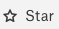Starring an object adds it to the list of your favorites in Alation. To remove it from your favorites list, click the star again. An orange star means the object is currently in the favorites list, while gray means starring is not applied.
To watch a catalog object, click the watch icon on the upper right of the catalog page:
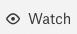Watching signs you up for email notifications. You will get notified whenever another user makes a change to the page. To stop watching, click the watch icon again. Orange means watching is toggled on, while the gray watch icon means it is off.
Starring and watching Alation objects makes them easy to find and navigate to in Alation. You can quickly find the list of objects you have starred or are watching or by clicking the star or watch icons in the Filters area of the full-page search page.
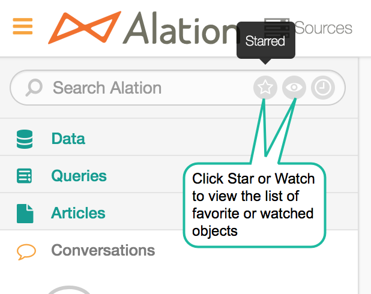{kind=link}
Starting a Conversation¶
To start a conversation, click the conversations icon on the right:
To learn more about Conversations, see: